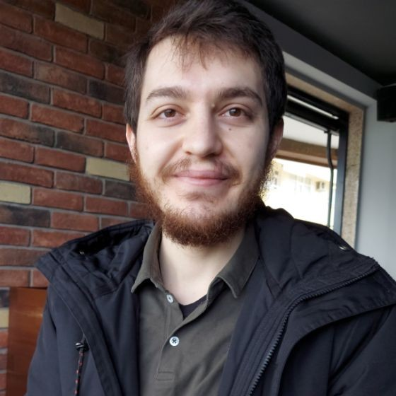

 Barış Salman
Curriculum vitae
E-mail Phone Website
Github Linkedin Biostars Orcid
Technical skills
Wet lab and Bioinformatics
| DNA/RNA/Protein | Isolation, quantative/qualitative PCRs, Blotting, Cytogenetics and Karyotyping | Sequencing | WGS, WES, Panels, RNAseq, scRNAseq, Sanger |
| Functional Studies | Cell Culture, in vivo models, Microscopy | Micro-arrays | Genotyping, Expression |
| Genetic Engineering | Recombinant DNA technologies |
Computers and Data Analyses
| Development | Python, R, Unix Shell | Analysis | Python Scientific Toolkit(numpy, pandas, scipy etc.), R language, Shell Scripting, Bioinformatic tools |
| Machine Learning, PCA, Clustering | |||
| Workflow | Linux, Doom Emacs, Git, Jupyter | Statistics and Probability | Hypothesis testing, Bayesian Theorem, Data distributions |
| Writing | Orgmode, Zotero, Bibtex, LaTeX | Visualization | Matplotlib, Plotly/Dash, LaTeX |
| Web Development | Django, Javascript |
Education
| Doctorate, 2021—ongoing | Genetics, Institute of Health Sciences, Istanbul University, Turkey | GPA 3.5 |
| Thesis | Investigating the Genetic Basis of Epilepsies with Genomic Approaches | |
| Adviser | Prof. Dr. Sibel Uğur İşeri | |
| Notable Courses | Advanced Molecular Genetics, Mendelian and non Mendelian Diseases, Chromosomal Diseases, Systems Biology | |
| Master, 2016—2019 | Genetics, Institute of Health Sciences, Istanbul University, Turkey | GPA 2.14 |
| Thesis | Study of Split Hand/Foot Malformation with Genomic Techniques and Bioinformatic Approaches | |
| Adviser | Assoc Prof. Dr. Sibel Uğur İşeri | |
| Notable Courses | Bioinformatics, Genetic Counseling, Medical Genetics, Hospital Rotation for Genetic Counseling | |
| Bachelor, 2011—2016 | Molecular Biology and Genetics, Istanbul University, Turkey | GPA 2.44 |
| Thesis | Metabolic Regulation in Prokaryotes with Small Non-Coding RNAs | |
| Adviser | Asst. Prof. Dr. Semian Karaer Uzuner | |
| Notable Courses | Methods Used in Molecular Biology(lab), Molecular Genetics, Genetic Engineering |
Jobs
| Company | Refgen Biotechnology | Development of platform for bioinformatics |
| Date | Mar 2021—Ongoing | Pipeline research and development |
| Position | Genetics and Bioinformatics Specialist | |
| Company | Gen-Era Diagnostics | Development of pipelines for NGS |
| Date | Oct. 2018—Mar 2021 | Variant pathogenity classification automatization |
| Position | Genetics and Bioinformatics Specialist | |
| Company | Aktif Gen | Development of bioinformatic pipelines |
| Date | Jan. 2018—Oct 2018 | |
| Position | R&D Personnel |
Internships & Rotations
| Genetic Counseling | Fall 2018 |
rotation |
IU Cerrahpaşa, Department of Pediatric Genetics and Teratology |
| Genetic Counseling | Spring 2018 |
rotation |
IU Cerrahpaşa, Department of Medical Genetics |
| Cell Culture | August 2016 |
internship |
IU Cerrahpasa Department of Medical Biology |
| Genomics | June-July 2015 |
internship |
IU A.S. Institute of Exprmental Medicine Department of Genetics |
| Cytogenetics | June-July 2014 |
internship |
IU Department of Medical Genetics |
| Molecular Dynamics | 2012-2013 |
internship |
IU Faculty of Science Quantum Technologies Laboratory |
Certificates
| Use and care of | Mar 21 - Apr 08 |
| laboratory animals | IU HADYEK 46. Laboratory Animal Use Training |
| Liquid handling | 2-5 November 2021 |
| robot | Hamilton Venus Online Advanced Software Training |
| 9-12 August 2021 | |
| Hamilton Venus Online Basic Software Training | |
Publications
- Susgun, S. et al. Reanalysis of exome sequencing data reveals a treatable neurometabolic origin in two previously undiagnosed siblings with neurodevelopmental disorder. Neurol Sci 44, 2527–2540 (2023).
- Susgun, S. et al. Targeted resequencing reveals high-level mosaicism for a novel frameshift variant in WDR45 associated with beta-propeller protein-associated neurodegeneration. Int J Neurosci 1–6 (2023) doi:10.1080/00207454.2023.2208279.
- Oguz-Akarsu, E., Salman, B., Ugur-Iseri, S. & Baykan, B. An Extraordinary EEG Phenomenon Misdiagnosed as Nonconvulsive Status Epilepticus: Frequent Subclinical Periodic Discharges Terminated by Sudden Auditory Stimuli. Clin EEG Neurosci 15500594221129965 (2022)
doi:10.1177/15500594221129965.
- Mercan, S. et al. Clinical and genetic analyses in syndromic intellectual disability with primary microcephaly reveal biallelic and de novo variants in patients with parental consanguinity. Genes Genom (2022) doi:10.1007/s13258-022-01344-8.
- Khalilov, D. et al. Epilepsy or neurodevelopmental disorders are associated with homozygous and pathogenic ELP2 variation in three siblings. Neurocase 28, 488–492 (2022).
- Uğur İşeri, S. Combined Analysis Of Linkage And Whole Exome Sequencing Reveals CIC As A Candidate Gene For Isolated Dystonia. Journal of Istanbul Faculty of Medicine 84, 457–463 (2021).
- Haryanyan, G. et al. The rare rs769301934 variant in NHLRC1 is a common cause of Lafora disease in Turkey. J Hum Genet 66, 1145–1151 (2021).
- Bekdik Şirinocak, P. et al. Susceptibility to Juvenile Myoclonic Epilepsy Associated with the EFHC1 Gene: First Case Report in Turkey. tnd 25, 233–236 (2019).
- Akçakaya, N. H. et al. A Novel and Mosaic WDR45 Nonsense Variant Causes Beta-Propeller Protein-Associated Neurodegeneration Identified Through Whole Exome Sequencing and X chromosome Heterozygosity Analysis. Neuromolecular Med 21, 54–59 (2019). Akçakaya, N. H., Salman, B., Görmez, Z., Tarkan Argüden, Y., Çırakoğlu, A., Çakmur, R., Dönmez Çolakoğlu, B., Hacıhanefioğlu, S., Özbek, U., Yapıcı, Z., & Uğur İşeri, S. A. (2019). A Novel and Mosaic WDR45 Nonsense Variant Causes Beta-Propeller Protein-Associated Neurodegeneration Identified Through Whole Exome Sequencing and X chromosome Heterozygosity Analysis. Neuromolecular Medicine, 21(1), 54–59. https://doi.org/10.1007/s12017-018-08522-6
in pipeline
- Whole exome sequencing widens the spectrum of associated genes in a cohort with lateral temporal lobe epilepsy (in review.)
- Variant Version Control: A Git Framework For Keeping Track Of Variant Annotation Changes (in prep.)
Collaborative
Posters
- Susgun S., Kesim Y., Salman B., Yucesan E., Khalilov D., Sirin G., Baykan B, Bebek N., Iseri Ugur S., Two candidates bi-allelic variant to neurodevelopmental disorder in a consanguineous family from Turkey, ESHG 2022
- Acar A., Say M., Salman B., Dulger M.V., Comparison of Established Microsatellite Instability Detection Tools in Next Generation Sequencing, ESHG 2021
- Ugur Iseri S., Akçakaya N. H., Salman B., et al., Exome Sequencing Identifies a FBXO38 Variant Inherited from a Mosaic Mother to cause Distal Hereditary Neuronopathy Type IID with Distinct Features, ASHG 2017
Congresses
- Investigation of Gene Variants Associated with Syndromic Intellectual Disability, 7. International Congress of Cerebral Palsy and Developmental Disorders, February 23-25 2018, Istanbul, Turkey
Projects
- 2021-2022 TUBITAK 1501 Project, 3210420, Modeling and Automatic Analysis of Genotype-Phenotype Related Copy Number Variations Researcher
- 2021-2022 Research Fund of Istanbul University, ONAP-37862, Transcriptomics Approaches To Biomarker Potential Of B Cell Expression Analyses In Anti-Neuronal Antibody Related Autoimmune Epilepsy Researcher
- 2018-2019 Research Fund of Istanbul University, TYL-2018-30315, Study of Split Hand/Foot Malformation with Genomic Techniques and Bioinformatics Approaches Researcher
- 2018–2018 TUBITAK 1512 Project, 3210420 Development of Cloud Based Software for Next Generation Amplicon Sequencing Technologies, Jan 2018- Oct 2018 Research Fellow
- 2017-2018 Research Fund of Istanbul University, TDP-2017-25510, Genetic Analyses of Progressive Myoclonic Epilepsy Researcher
- 2016–2018 TUBITAK 1001 Project, Investigation of Epileptogenesis After Febrile Seizures Research Fellow
Software
| VVC | Variant Version Control (in development) |
| Tool for tracking changes in variant annotation using git. | |
| χΣΔ | Cross-symbol checker |
| This tool checks Ensembl and NCBI annotation files for different genome versions and shows which gene symbol is used. This way a more appropriate gene set can be used to avoid the false negatives in the variant discovery process. | |
| Dove | Downstream VCF Evaluation |
| Tool for annotating VCF files, multi genome analysis and filtering variants. | |
| Pigeon | Pipelining Genomic Operations |
| Tool for pipelining bioinformatics tools written considering NGS applications. | |
| Picus | Pointed Interpretation of Clinical Variant Significance |
| Tool for classifying sequence variants according to ACMG/AMP criteria. |
Awards
III. Rare Neurological Diseases Symposium and Neurogenetics Course, Second place project award, Istanbul, Turkey, 2017
Congresses&Courses
- 2023 YTÜ Biyogen, II. Bioinformatic Conference, Nov 10, Bioinformatics in uncovering the genetic basis of human diseases (Oral Presentation)
- 2023 İSTisNa, Strategies, Genomic Approaches and Data Analysis for Rare and Undiagnosed Diseases Course, Oct 12-13, Quality metrics in sequencing data (Oral Presentation)
- 2022 Turkish Society of Medical Genetics, Nov 9-13, Genome-Level Evaluation of Copy Number Changes, One of the Important Risk Factors for Genetic Epilepsy (Oral Presentation)
- 2020 ESHG 2020, June 6-9, Virtual Conference, GenerAVI: Variant Interpreter and Genetic Analysis Summary Generator (Poster Presentation)
- 2019 7th International Congress of the Molecular Biology Association of Turkey, Sep 27-29, Istanbul, Turkey, PICUS: Pointed Interpretation of Clinical Variant Significance (Poster Presentation)
- 2019 Bioinformatics Days III, Gazi University Faculty of Medicine, May 25, Ankara, Turkey, NGS Pipelines with Python (Oral Presentation)
- 2019 Erciyes University Faculty of Medicine Genetics Days, February 21-23, Kayseri, Turkey, Making Sense of Human Genome with Databases and Bioinformatic Tools (Oral Presentation)
- 2018 IV. Rare Neurological Diseases Symposium and Neurogenetics Course, May 31-July 1, Istanbul, Turkey, Analysis of Neurogenetics Data Interactive Training and Practice (Instructor)
- 2018 11. National Epilepsy Congress, May 3–6, 2018, Dalaman, Turkey, Meta Analysis of SCN1A Gene Variants of 114 Patients from Epi25 Exome Data (Oral Presentation)
- 2018 7. International Congress of Cerebral Palsy and Developmental Disorders, February 23-25, Istanbul, Turkey, Investigation of Gene Variants Associated with Syndromic Intellectual Disability
- 2017 53. National Neurology Congress, November 24–30, Antalya, Turkey, Genomic Approaches to Intellectual Disability Case with Epilepsy (Oral Presentation)
- 2017 III. Rare Neurological Diseases Symposium and Neurogenetics Course, July 1–2, Istanbul, Turkey, Profiling Anti-Epileptic Drug Resistance an Genetic Diagnosis with Epilepsy Panel (Poster Presentation)
General skills
Languages
| Turkish Mother Tongue | |
| English Advanced | Fluent |
| These are the languages I am still learning | |
| French Beginner | Basic words and phrases |
| Japanese Beginner | Basic words and phrases |
| Latin Beginner | Basic words and phrases |